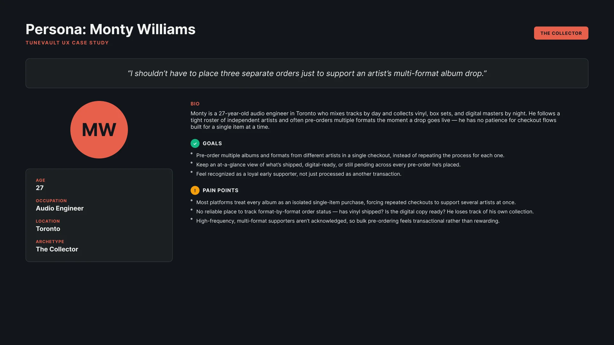
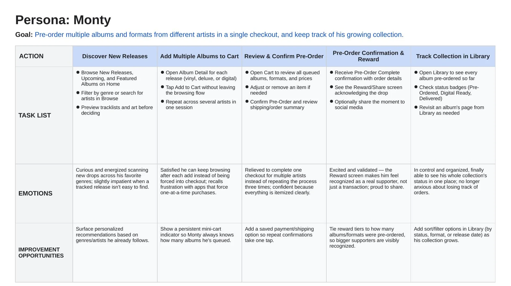
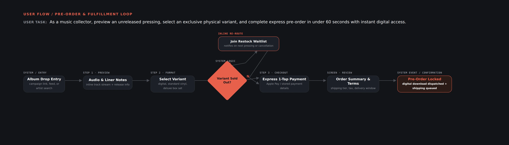
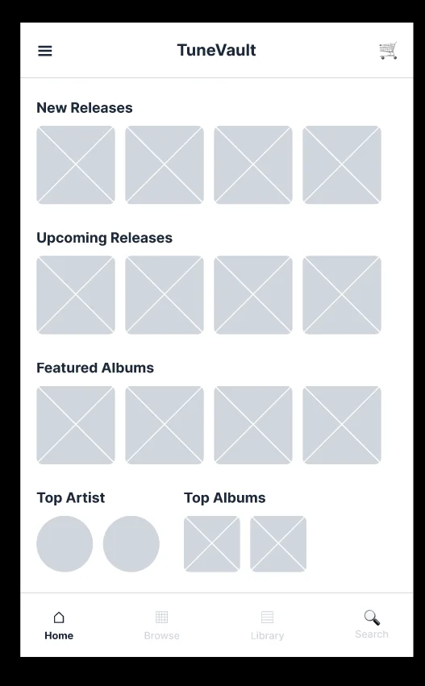
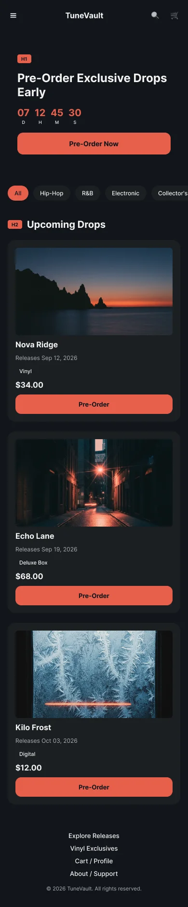
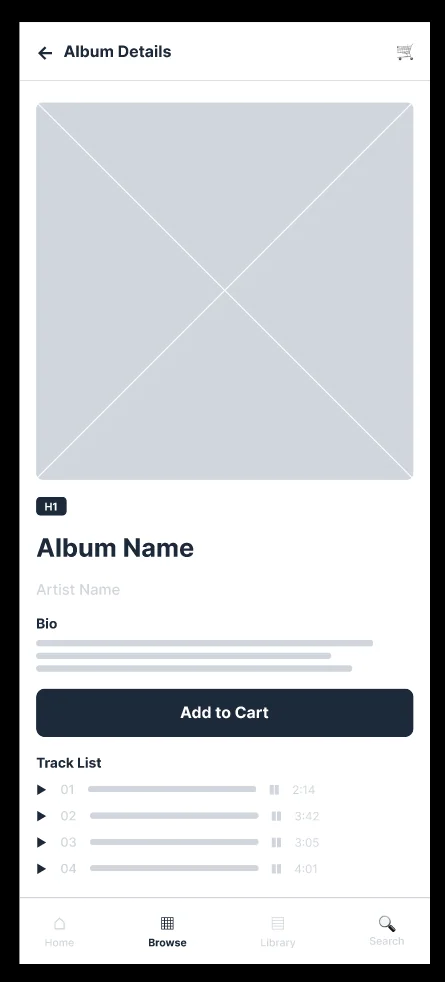
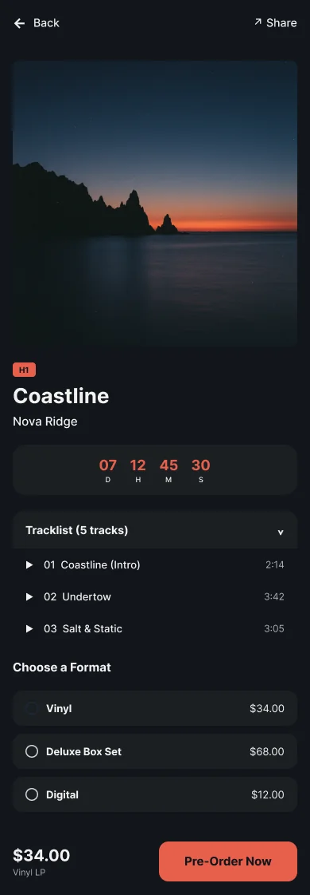
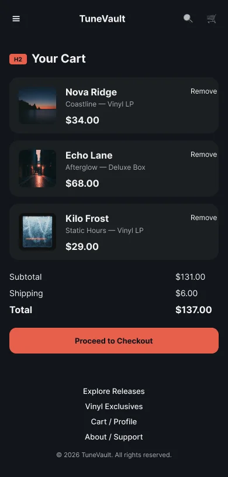
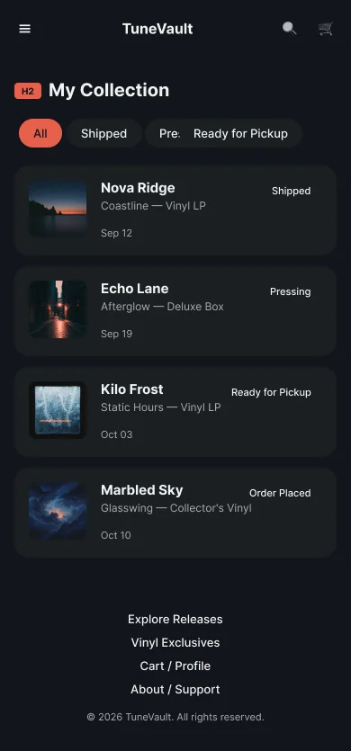

A vinyl pre-order and collector app that lets fans support several artists in one checkout — choose shipping or local record-shop pickup, and actually see what happened to the order afterward.
I interviewed four TuneVault users — a cybersecurity analyst, a college student, a project management intern, and a tattoo artist with a following. Going in, I assumed speed alone would drive pre-order decisions. It didn't: people also wanted to feel recognized, and nobody could check on an order once it was placed.
“Fans who want to support multiple artists at once are forced to repeat a full checkout for every single album, with no way to track orders once placed.”
Pre-ordering meant re-entering payment details and repeating the flow for every artist.
No way to see real-time status once a pre-order was placed.
Frequent supporters got no acknowledgment for pre-ordering often.
Fans with a following had no built-in way to promote a pre-order.
27, an audio engineer and self-described collector in Toronto — the persona every decision below traces back to.

To pre-order from several artists in one sitting, not one checkout per artist.
An at-a-glance view of what's shipped, digital, or still pending.
Bulk, loyal pre-ordering feels transactional, not rewarding.
Five stages, from discovering a release to checking his collection weeks later — this is where the cart, the reward moment, and the Collection all came from.

Four user stories anchored every screen that followed — mapped here against the acceptance criteria that made each one buildable, then traced end-to-end through the pre-order & fulfillment loop below.

Discover, decide, confirm — and come back to check on it.
Both rounds focused on the cart and reward flow — the two features added directly in response to research.
Round 1: users didn't notice they could queue more than one album. Fix: a persistent cart icon in the header made the multi-item flow obvious.
Round 1: after confirming, there was no clear next step. Fix: a new Collection tab closed the post-order tracking gap entirely.
Round 1: some expected recognition right after adding to cart. Decision: kept Reward post-confirmation — reactions were still positive overall.




The three features that came directly out of the four pain points.


A single-item “one-click” checkout looks efficient on paper, but real fans wanted to support several artists in one sitting. Small early assumptions can quietly shape an entire product's information architecture.
Validate the new physical-fulfillment flow (Ship to Me vs. Local Pickup) with real users — it hasn't been usability-tested yet — and extend the visual system to the homepage and navigation, which currently don't match.